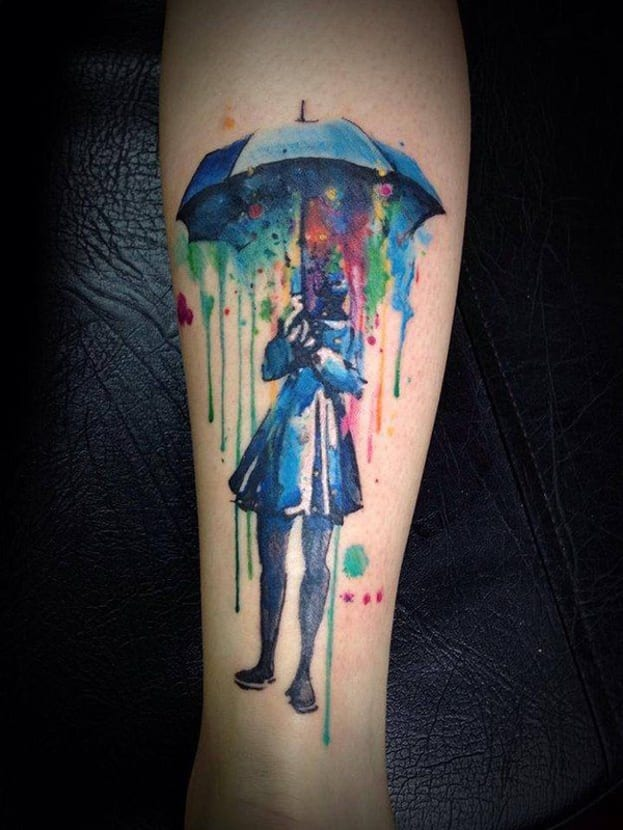

En este video encontrarás una breve descripción de cada uno de los estilos de tatuaje.
Black & Grey
Dentro de los estilos de tatuajes que actualmente se demandan, el black and grey (negro y gris) es una especie de combinación de blackwork y acuarela. El artista trabaja solo con tinta negra, y la diluye con más o menos agua para obtener distintas tonalidades de gris y crear profundidad, sombreado
Acuarela
El efecto de estos tatuajes es similar al de las acuarelas sobre papel. Los colores se difuminan para crear luces y sombras, consiguiendo obras muy atractivas. El efecto se consigue superponiendo veladuras de color en distinta concentración (más o menos opacas).

Realista
Estos tatuajes están enfocados a reflejar exactamente una imagen, fotografía, etc. En ellos, la pericia y la habilidad del tatuador cobran especial importancia: por ejemplo, si el tatuaje es un retrato, el parecido es fundamental. Estos tatuajes pueden reproducir imágenes reales, pero también conceptos surrealistas o fantásticos